Amra holam 7 jon ar akta group,duniya ultai gelew amra ture e jawyar jonno ja ja dorkar amra manage kori.hok seta kidni becha or bichi bisorjon.amader plan golo hoi hotat hotat .amra kothao plan kore ghute jaite pari na je kono akta problem kata hoye darai,jai hok plan charai ghurte onek moja ami mone kori
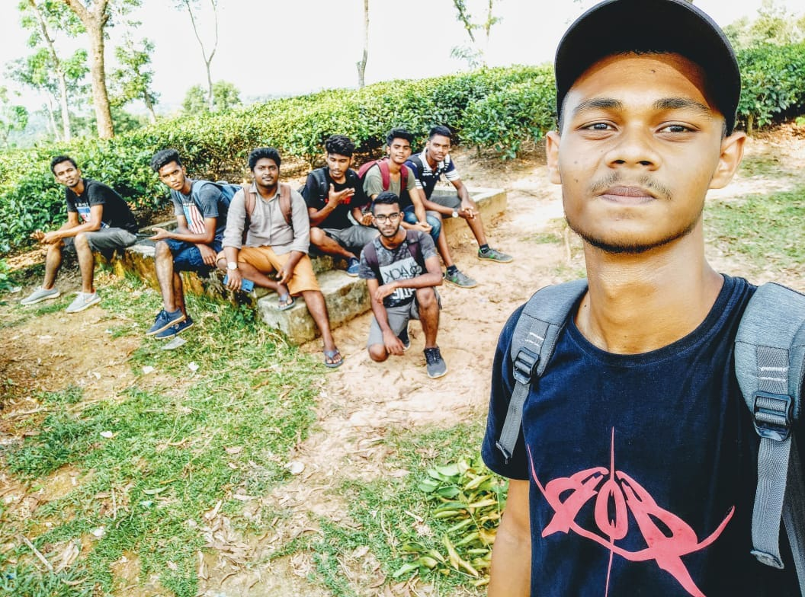
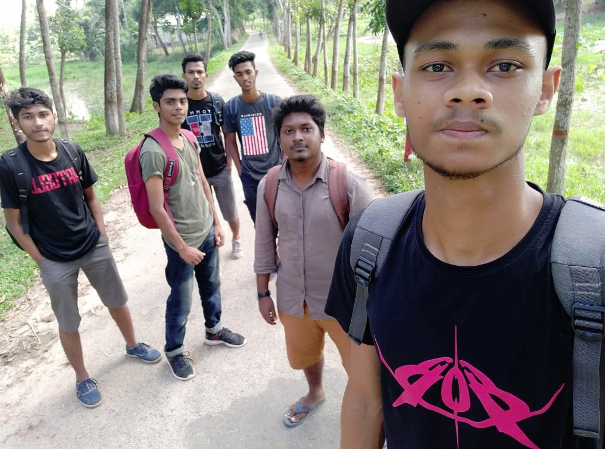
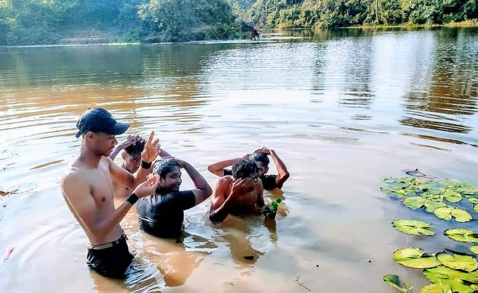
Tour 2020 in sylhet
Amra mot 6 dine bes kichu place porjoton korechi.jegulo holo;
kendrio sohid minar
Sahajalal Mazar
Jaflong
mayabi jorna
Srimonggol cha bagan
Madobpur cha bagan
Madobkundda leke
boddobhumi
paach vhai restrorent
Habigang
kendrio sohid minar
Author:AH Rafi
Amra onek sokale ghum theke uthe jai turear prothom din,jodio chokhe chilo ghum ar mathai chilo ghuraguri, ghum theke uthe dekhi amra motamoti sob kichi niye asci toothpest chara. ar por rafi ar yamin ber holo toothpest khujte ,onek sokal chilo tai dokan chilo sob off ,toothpest khujte khujte pelam ak sohid minan.amar dekha sob ceye vhinno rokom chilo seta,daran apnader o dekhai;
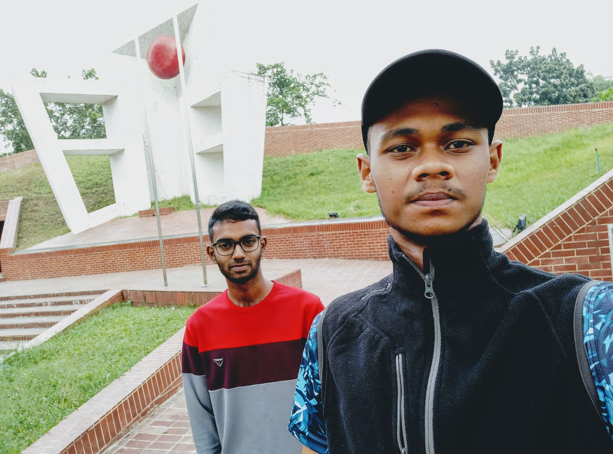
Sahajalal Mazar
sokale brash na korei sobai ready holam,mazarer pase theke toothpest kinlam than mazarei bose bose sobai brash korlam...mazar jeyarot kore kobutor ar jhaak dekhe to amra fida ,ato sundor lagtesilo tader;
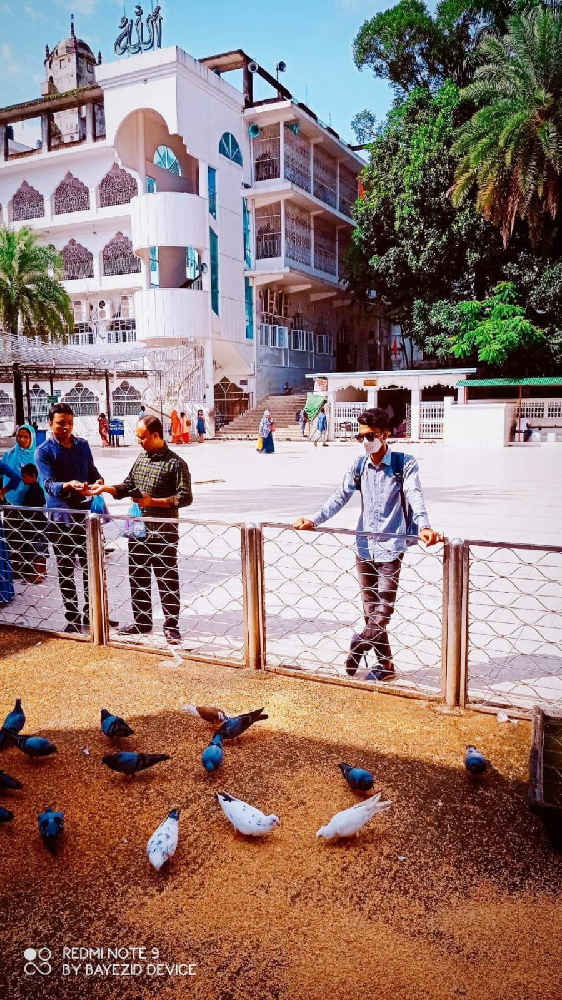
Jaflong
Author:AH Rafi
Rouna dilam jaflong ar uddese, hotat bus stand jeye mone porlo amr kadher beg koi,mone porlo cng theke nite vhule gechilam ,abr gelam mazarer cng station e. jeye motamoti hasi mukhe firot asci. jai hok uthlam bus e.. expectetion ar tulonai onek besi somoi lage amader jaflong pouchaite.jai hok kostw korle je kesto mile ta to jaflong ar view dekhai sure holam
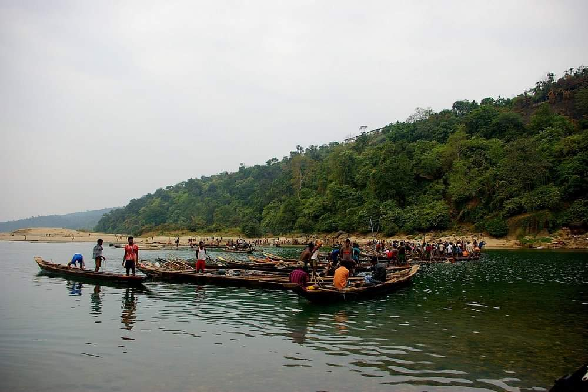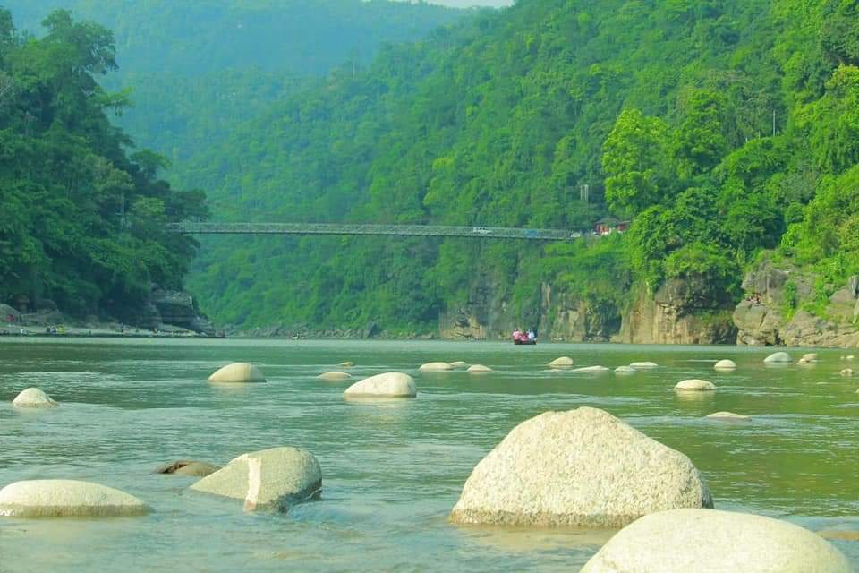
mayabi jorna
Author:AH Rafi
jhornay jawar age amader pari dite hoyechio lomba nodir tribbo strot.onek cesta korew paye hete par hote parlam na,jai hok powchalam mayabi jhornai ,vhijte gelam sobai ,juta paharai chilo yamin.ar por soru holo camera man ar jalaton,tar hazar reqest ar por kinchit shympathy dekhaya raji holam chobi tulte,chobi tullam sobai kobji dubaiyya ,kintuuu akta chobi o valo ase nai ,1000 taka sompurno panite fellam.ses korlam amader jhornar gosol without shaban.ar por jaflong ar choto paharer buke sobai half lengtu hoye dress change kore basai chole asi
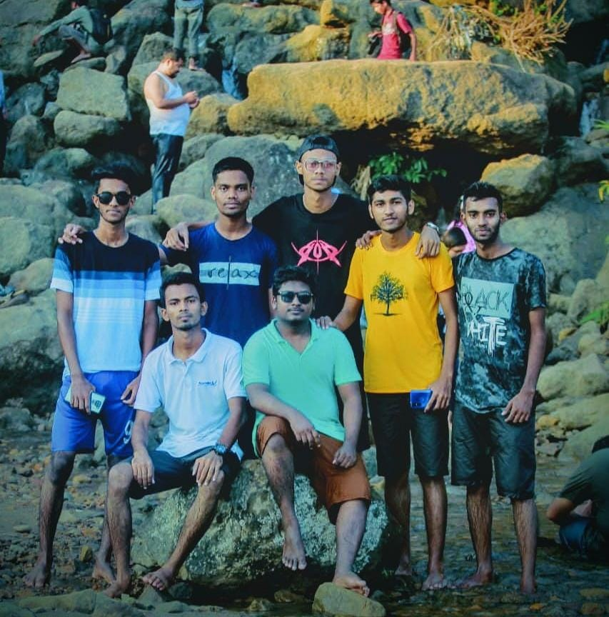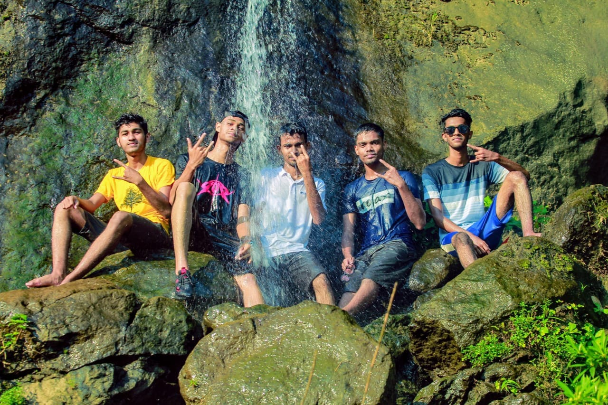
Srimonggol cha bagan
Author:AH Rafi
Rouna holam Srimonggolar uddese ,sekhane amader resive rorar jonno opekha kortechilo amader arekta bondhu nahid.gelam cha bagan dekhte jodio okhane jeye amra kono cha khai ni.jedike takai sedikei sodu sobuj cha bagan ar cha bagan.
Madobpur cha bagan
Author:AH Rafi
chole aslam onno akta cha bagane.bisal cha bagan jar majkhane onek sundor lake.porichito holam ak chapata shong-grohok ar shate .sunlam tar jibika nirbahor golpo.ak shate chobi tullam.tar por khute soru korlam lake e namar rasta.
Madobkundda leke
Author:AH Rafi
chorer samle lake chilo kintu lake e namar rasta chilo na ,onek khuja khijir por pelam choto akta chipa.ar deri na kore neme gelam ,jara satar pare na tara dure dure chilo, cokhe porlo shapla ful,jiboner prothom nij hate sapla ful tultam .osadharon feelings ,bole bujano jabe na tai akto chobi te dehai;
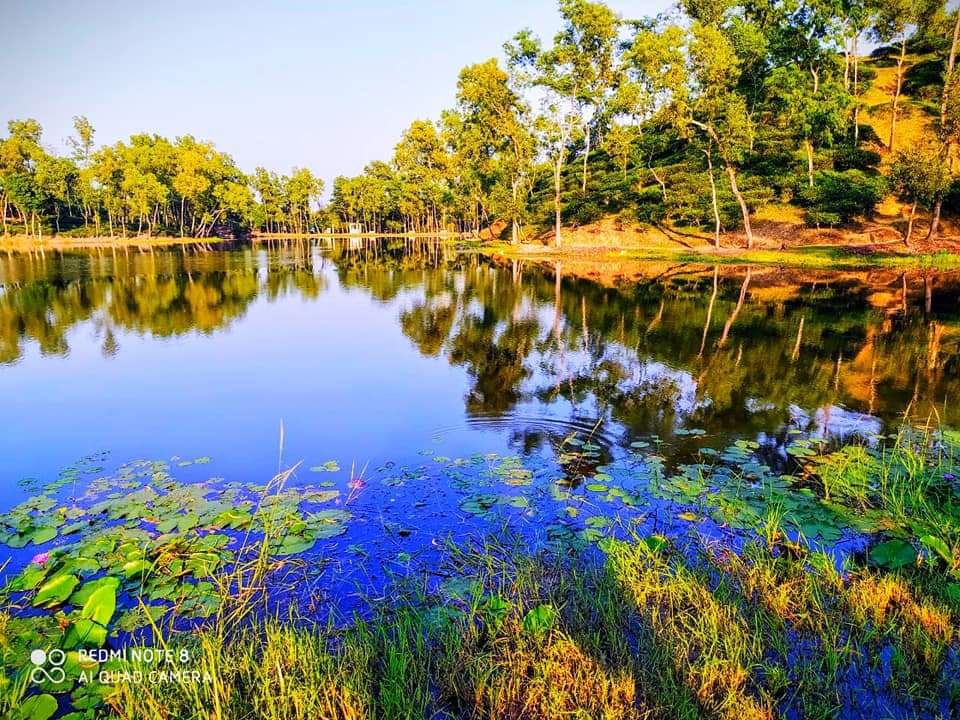
boddobhumi
Author:AH Rafi
boddobhumi te jawyar age porjonto idea korete partachilam na asole boddobhumita ki,boddobhumir gate diye dhukei ak lighting jornar shate dekha ar por julonto briz,judddha der sorone ak stombbo ,sekhane onek sohid ke ak shate gono kobor dewya hoichilo tai tar nam dewya hoise boddobhumi
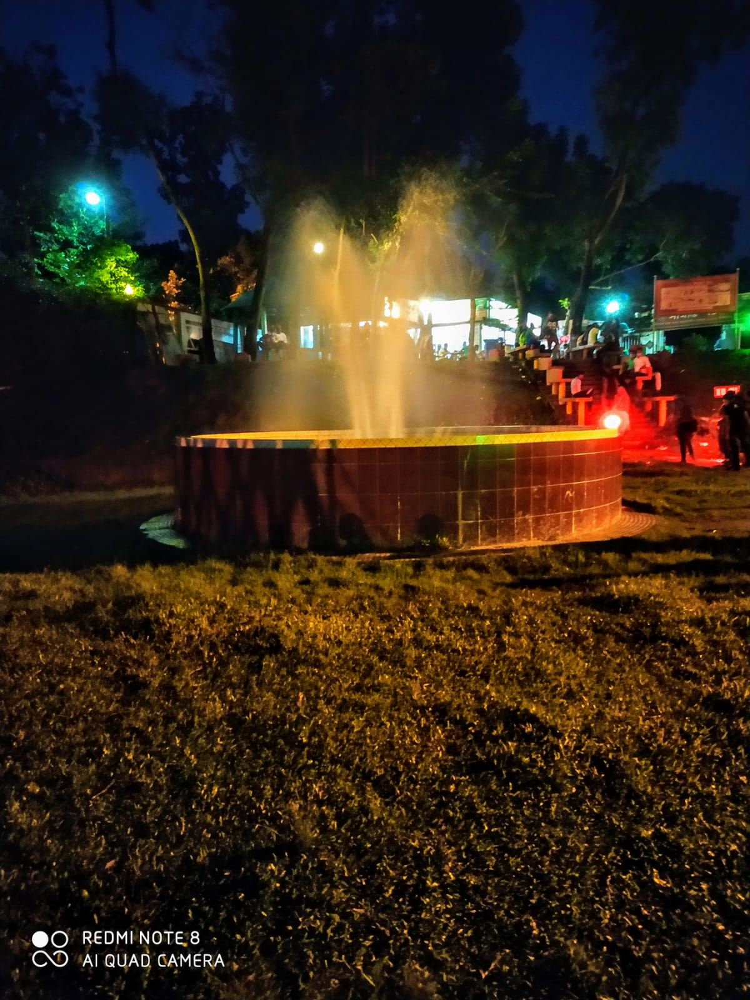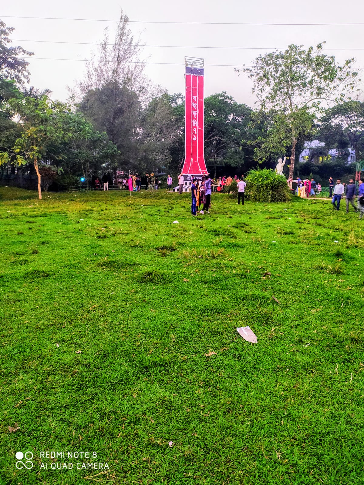
Habigang
Author:AH Rafi
ay habigang e jawyar jatra ta chilo amader ture ar most of the best dission.4-5 din bahreer khabar kheye ,bahire bahire ghure motamoti sobai unfit hoye gechilam .habigang e jawyar karon chilo shudu matro relax korar jonno,gelar sobai gatti-gotta niye nahider bari mane habigang.porichito holam nahider untyr shate mane se ay muhurto theke amader o unty ..sobar sorer condition dekhe oni ja care korse 1 dinei sobai fit hoye gechilam .by the way oni chinen akjon nurse..bondhur ammu mane amader e ammu ato valo appayon korse mone holo 4-5 din pore akto mon vhore khilam.rat holo soru korlam vhuture golper adda .habigang jaiga ta chilo jeno ak vhuture astana .ghumate gelam dekha hoye gelo ak oporichito prani cock-tang ..vhoi pabo bole santona diccilo anty ,edike amra rater 2 tar dike tar shate ha du du soru kore di porer din ghurlam train ar ticket pelam taw abr black ticket.chole aslam soja chittagong
 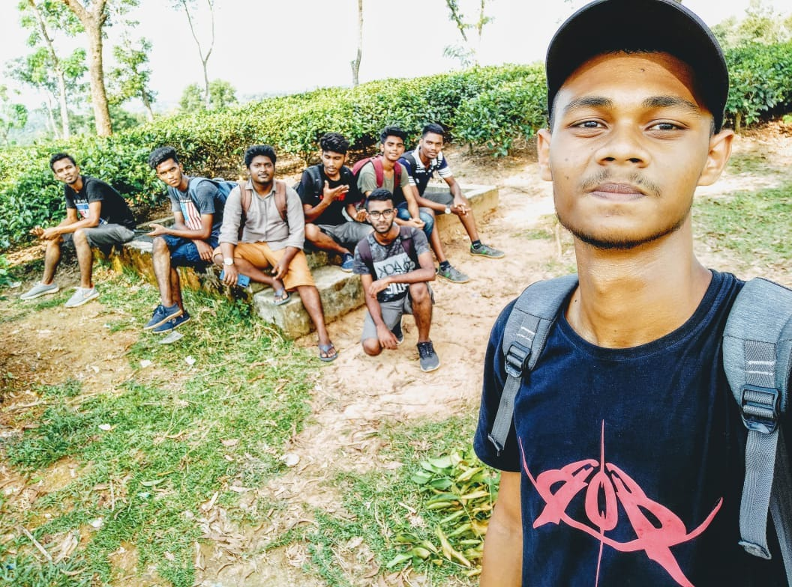
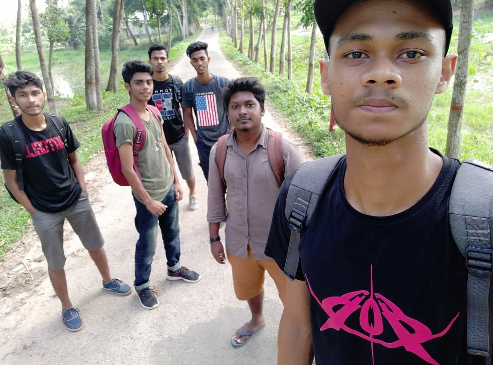
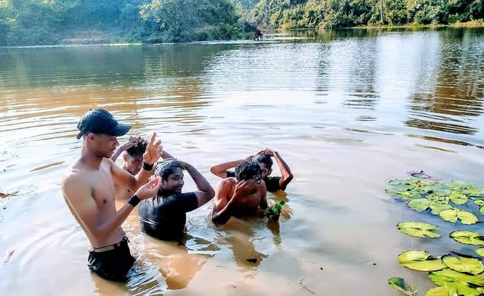
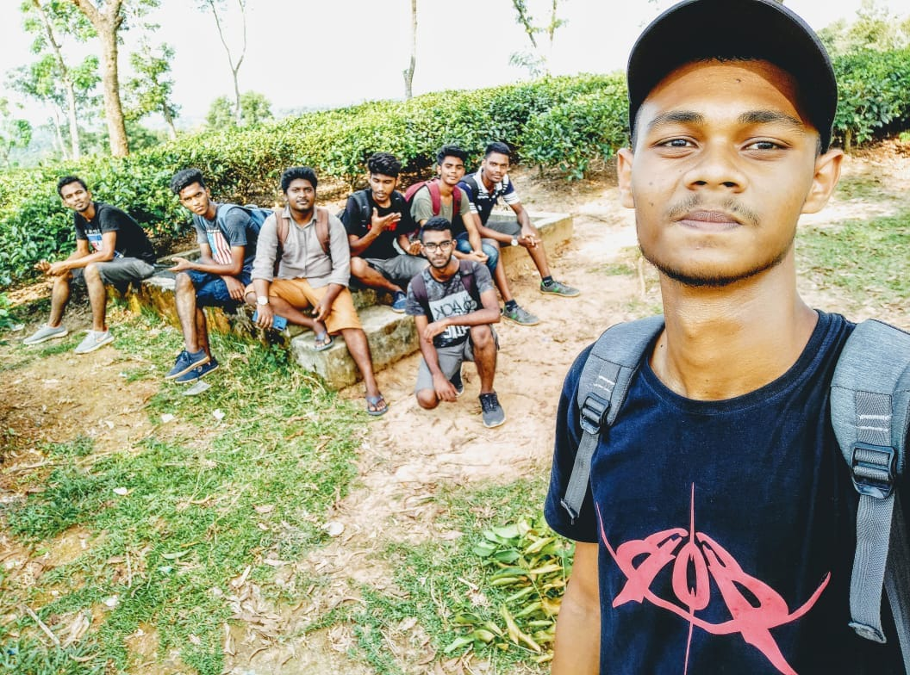
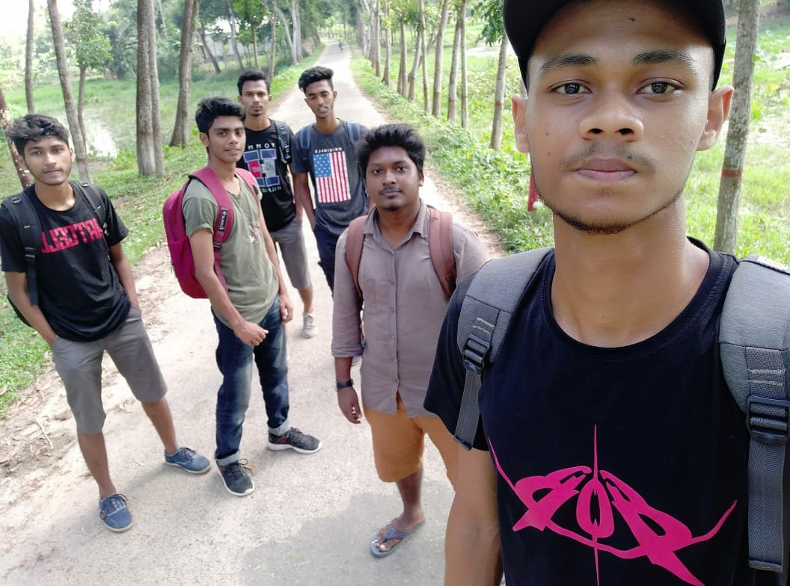
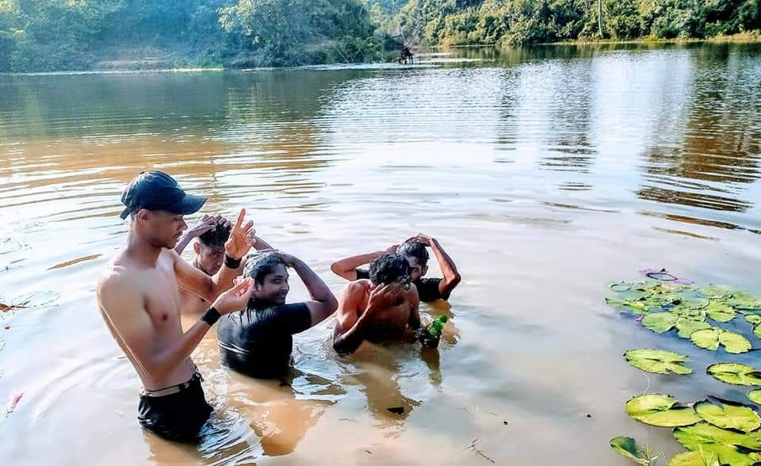